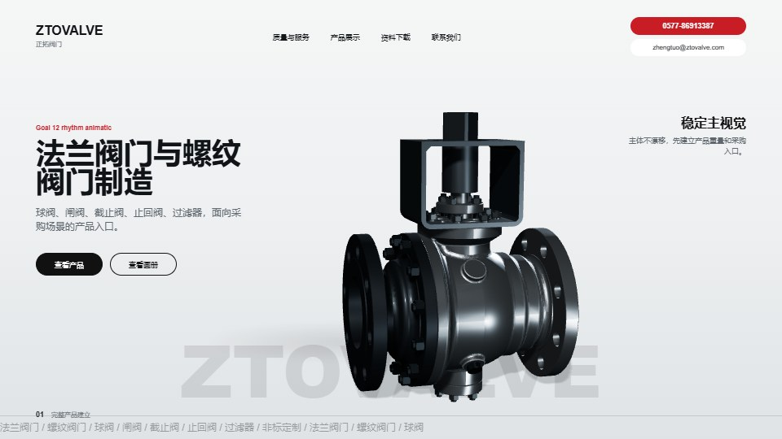
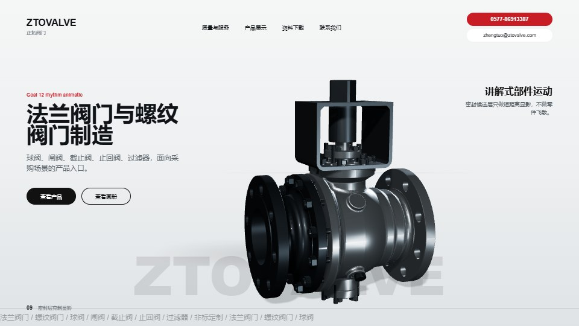
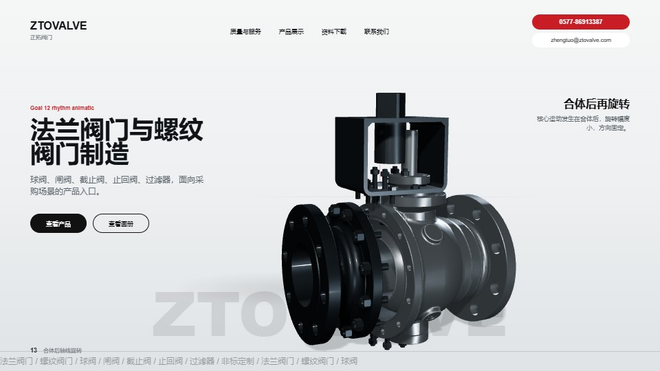
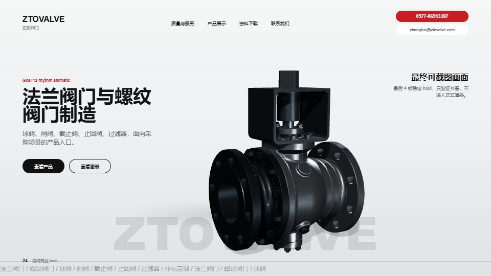

通过条件
24 帧播放时不出现散乱爆炸感，主体不漂移，小五金不抢戏，最后 4 帧稳定可截图。
如果通过
进入 Goal 13：按同一节奏重做正式 240 帧 AVIF，并重新接入首页 hero。
如果不通过
回到 Goal 11 still 调整产品比例、材质明暗、分离幅度或文字层级，再重新出 24 帧。
Goal 12 / 24-frame rhythm animatic
这版只验证节奏：24 帧、12fps、2 秒。它不替换首页，不生成 240 帧正式序列， 只判断左右轴向合体、密封层克制显影、合体后小角度转体和最终 hold 是否成立。




24 帧播放时不出现散乱爆炸感，主体不漂移，小五金不抢戏，最后 4 帧稳定可截图。
进入 Goal 13：按同一节奏重做正式 240 帧 AVIF，并重新接入首页 hero。
回到 Goal 11 still 调整产品比例、材质明暗、分离幅度或文字层级，再重新出 24 帧。